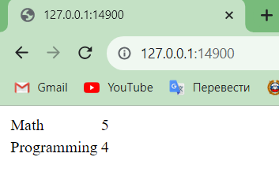
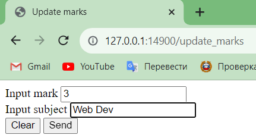
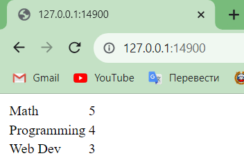
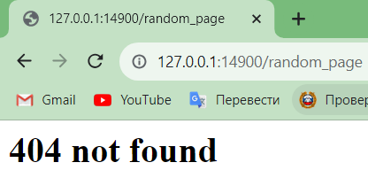

Упражнение 5
Код
Код сервера
import socket
import logging
from io import BufferedWriter, BufferedReader
import email.parser
import email.message
from urllib.parse import parse_qs, urlparse
from dataclasses import dataclass
from typing import List, Tuple
class Request:
"""
Class containing request data
"""
def __init__(self, method, target, version, headers, rfile):
self.method = method
self.target = target
self.version = version
self.headers = headers
self.rfile = rfile
@property
def url_path(self):
return self.url.path
@property
def url_params(self):
return parse_qs(self.url.query)
@property
def url(self):
return urlparse(self.target)
class ConnWriter:
"""
Wrapper around file interface of socket
"""
encoding = 'iso-8859-1'
def __init__(self, wfile: BufferedWriter):
self._wfile = wfile
def encode_and_write(self, s: str):
if not s.endswith('\r\n'):
s += '\r\n'
encoded = s.encode(self.encoding)
self._wfile.write(encoded)
def write_empty_line(self):
self._wfile.write(b'\r\n')
def write_bytes(self, s: bytes):
if not s.endswith(b'\r\n'):
s += b'\r\n'
self._wfile.write(s)
def __enter__(self):
return self
def __exit__(self, exc_type, exc_val, exc_tb):
self._wfile.flush()
self._wfile.close()
@dataclass(frozen=True)
class Response:
"""
Dataclass from which response created
"""
status: int
reason: str
headers: List[Tuple] = None
body: bytes = None
@dataclass(frozen=True)
class Mark:
"""
Dataclass to imitate row in database
"""
subject: str
mark: int
class MyHTTPServer:
"""
Accept requests, generate responses
"""
def __init__(self, host, port, server_name):
self._host = host
self._port = port
self._server_name = server_name
self.marks: List[Mark] = [Mark('Math', 5), Mark('Programming', 4)]
"""Dict to imitate database. Already packed with some values"""
def serve_forever(self):
"""
Starts server. Main function of a class
"""
conn = socket.socket(socket.AF_INET, socket.SOCK_STREAM)
try:
conn.bind((self._host, self._port))
conn.listen(10)
while True:
client_conn, client_address = conn.accept()
self.serve_client(client_conn)
finally:
conn.close()
def serve_client(self, client_conn):
"""
Get response from a client and send appropriate response
"""
request = self.parse_request(client_conn)
response = self.handle_request(request)
self.send_response(client_conn, response)
def parse_request(self, conn):
"""
Convert request into Request instance
"""
rfile = conn.makefile('rb')
method, target, version = self.parse_request_line(rfile)
logging.debug(f'request_line: {method} {target} {version}')
headers = self.parse_headers(rfile)
logging.debug(f'headers:\n{headers}')
self.check_host(headers)
return Request(method, target, version, headers, rfile)
def parse_request_line(self, rfile):
request_line = rfile.readline().decode('iso-8859-1')
request_line = request_line.rstrip('\r\n')
method, target, version = request_line.split()
if version != 'HTTP/1.1':
raise Exception('Invalid HTTP version')
return method, target, version
def parse_headers(self, rfile: BufferedReader) -> email.message.Message:
headers_list = []
while True:
line = rfile.readline()
if line in (b'\r\n', b'\n', b''):
break
headers_list.append(line)
headers_str = b''.join(headers_list).decode('iso-8859-1')
return email.parser.Parser().parsestr(headers_str)
def check_host(self, headers):
"""Is host correct?"""
host = headers.get('Host', '')
logging.debug(f'host: {host}')
if not host:
raise Exception('Request without host')
if host not in (self._server_name,
f'{self._host}:{self._port}'):
raise Exception('Invalid host')
def handle_request(self, request:Request) -> Response:
"""Handle different types of request. Even if this request is not supported"""
if request.method == 'GET' and request.url_path == '/':
return self.handle_get_mark(request)
if request.method == 'POST' and request.url_path =='/update_marks':
return self.handle_post_update_marks(request)
if request.method == 'GET' and request.url_path == "/update_marks":
return self.handle_get_update_marks(request)
if request.method == 'GET' and request.url_path == '/favicon.ico':
return Response(200, 'OK')
return self.handle_404(request)
def handle_post_update_marks(self, request: Request):
arg_line = request.rfile.readline()
arg_line = arg_line.decode('iso-8859-1')
parameters = parse_qs(arg_line)
if 'mark' not in parameters:
raise Exception('No mark in post')
if 'subject' not in parameters:
raise Exception('No subject in post')
mark = parameters['mark'][0]
if not mark.isnumeric():
raise Exception('Invalid mark')
mark = int(mark)
subject = parameters['subject'][0]
self.marks.append(Mark(subject, mark))
return Response(204, 'Created')
def handle_get_mark(self, request: Request):
content_type = 'text/html; charset=utf-8'
body = '<html><head></head><body>'
body += '<table>'
for mark in self.marks:
body += '<tr>'
body += f'<td>{mark.subject}</td>'
body += f'<td>{mark.mark}</td>'
body += '</tr>'
body += '</table>'
body += '</body></html>'
body = body.encode('utf-8')
headers = [('Content-Type', content_type),
('Content-Length', len(body))]
return Response(404, 'Not Found', headers, body)
def handle_404(self, request: Request):
body = '<html><head></head><body><h1>404 not found</h1></body>'
body = body.encode('utf-8')
content_type = 'text/html; charset=utf-8'
headers = [('Content-Type', content_type),
('Content-Length', len(body))]
return Response(200, 'OK', headers, body)
def handle_get_update_marks(self, request):
with open('update_marks.html') as f:
body = ''.join(f.readlines())
body = body.encode('utf-8')
headers = [('Content-Type', 'text/html; charset=utf-8'),
('Content-Length', len(body))]
return Response(200, 'OK', headers, body)
def send_response(self, conn: socket.socket, resp: Response):
"""Convert Response class instance into appropriate test and sends it via socket"""
with ConnWriter(conn.makefile('wb')) as wfile_wrapped:
status_line = f'HTTP/1.1 {resp.status} {resp.reason}'
wfile_wrapped.encode_and_write(status_line)
if resp.headers is not None:
for key, value in resp.headers:
header_line = f'{key}: {value}'
wfile_wrapped.encode_and_write(header_line)
wfile_wrapped.write_empty_line()
if resp.body is not None:
wfile_wrapped.write_bytes(resp.body)
if __name__ == '__main__':
format = "%(asctime)s: %(message)s"
logging.basicConfig(format=format, level=logging.INFO,
datefmt="%H:%M:%S")
host = '127.0.0.1'
port = 14900
name = 'example.local'
server = MyHTTPServer(host, port, name)
server.serve_forever()
Код update_marks.html
<!DOCTYPE html>
<html lang="en-GB">
<head>
<title>Update marks</title>
</head>
<body>
<form action="/update_marks" method="post">
<label>
Input mark
<input type="number" size="3" id="mark" name="mark">
</label>
<br>
<label>
Input subject
<input type="text" size="20" id="subject" name="subject">
</label>
<div>
<input type="reset" value="Clear">
<input type="submit" value="Send">
</div>
</form>
</body>
</html>
Демонстрация

Содержание корневой страницы до добавления данных

Странице для добавления оценок

Корневая страница после добавления оценки

При указании несуществующей страницы получаем not found